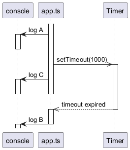

7 Asynchronous Programming and Files
Ask the AI tutor for this unit. It knows the chapters and exercises of this unit. You can ask in German or English.
Reading a file, calling a web service or querying a database takes time. This chapter is about what your program does in the meantime — and about the two keywords, async and await, that make waiting readable.
7.1 Node.js is single-threaded
Node.js runs your JavaScript on a single thread. There is no second thread picking up work in the background.
That sounds like a limitation, and for calculation-heavy work it is. But a web server does almost no calculation: it waits — for the disk, the database, another web service. While one request waits, the single thread is free to serve the next one. This is why Node.js is fast for I/O-bound servers and a bad choice for CPU-bound work.
The consequence: never block the thread. A blocking call does not slow down one request, it freezes the whole server for everyone.
import { readFileSync } from "fs";
import { readFile } from "fs/promises";
const bad = readFileSync("big.json", "utf-8"); // blocks the server. Never do this.
const good = await readFile("big.json", "utf-8"); // frees the thread while the disk worksWe use fs/promises exclusively in this unit.
7.2 The Promise
A Promise<T> is a value that is not there yet. It is pending, then either fulfilled with a value or rejected with an error.
async function loadCount(): Promise<number> {
const text = await readFile("data.json", "utf-8");
return JSON.parse(text).length; // a returned value is wrapped in a Promise
}
const count = await loadCount();Two rules:
- A function that uses
awaitmust be declaredasync. - An
asyncfunction always returns aPromise, whatever you write in the return type.
7.2.1 Forgetting await
const count = loadCount(); // Promise<number>, not a number
console.log(count); // Promise { <pending> }
console.log(count + 1); // compile error - and it would be nonsense anywayNothing warns you at runtime — the program happily prints a Promise and carries on. The type checker is your only protection here, which is another reason never to switch it off.
7.2.2 Top-level await
Because we use ES modules, await works directly at the top level of a file. No main() wrapper is needed:
// src/app.ts
const data = await loadData();
console.log(data.length);7.2.3 Sequential vs. parallel
const a = await loadA(); // waits
const b = await loadB(); // ... and only then starts
const [a, b] = await Promise.all([loadA(), loadB()]); // both at onceUse Promise.all whenever the calls do not depend on each other. Two requests that each take 200 ms then cost you 200 ms, not 400.
7.2.4 Error handling
A rejected promise behaves like a thrown exception:
try {
const text = await readFile(path, "utf-8");
} catch (error) {
// error is of type `unknown` - you cannot just access error.message
const message = error instanceof Error ? error.message : String(error);
console.error(`Could not read ${path}: ${message}`);
}:warning: In a
catchblock the error isunknown, notError. Narrow it before use.
7.3 Reading files
import { readFile } from "fs/promises";
const text = await readFile("data/lineup.json", "utf-8");Always pass the encoding. Without it you get a Buffer instead of a string.
7.3.1 Paths
A relative path is resolved against the working directory — wherever npm start was called from, which is not necessarily where your source file lives. Build paths explicitly:
import { dirname, join } from "path";
import { fileURLToPath } from "url";
const dirName = dirname(fileURLToPath(import.meta.url));
const dataPath = join(dirName, "..", "data", "lineup.json");:bulb:
__dirnamedoes not exist in ES modules. The three lines above are its replacement, and you will write them in every exercise from here on.
7.3.2 JSON
const text = await readFile(dataPath, "utf-8");
const acts = JSON.parse(text) as Act[]; // a LIE the compiler believesJSON.parse returns any. The as Act[] tells the compiler to stop asking questions — it verifies nothing. If the file is malformed, or a field is missing, the program crashes somewhere far away from the actual cause.
For file data we write ourselves, as is acceptable. For anything coming from a user or a network, validate it with a type guard, as in EX2.
7.3.3 Writing files
import { writeFile } from "fs/promises";
const json = JSON.stringify(acts, null, 2); // 2 = indentation, makes diffs readable
await writeFile(dataPath, json, "utf-8");writeFile overwrites the whole file and creates it if it does not exist.
7.3.4 CSV
There is no built-in CSV parser. Split the text yourself:
import { EOL } from "os";
const lines = text.split(EOL).filter((line) => line.trim().length > 0);
const rows = lines.slice(1); // skip the header
const tools = rows.map((line) => parseTool(line));:warning: Use
os.EOL, never a hard-coded"\n"— the files in this repository are edited on Windows and on Linux. If a file may come from either, split with/\r?\n/instead.
7.4 Lazy loading and caching
Reading a file on every request is wasteful. Read it once, on first use, and keep it:
let acts: Act[] | null = null; // null = not loaded yet
export async function getActs(): Promise<Act[]> {
if (acts === null) {
acts = await loadActsFromFile();
}
return acts;
}Note the type Act[] | null — strict mode forces you to make “not loaded yet” explicit, and to handle it. This pattern shows up in EX3 and EX4.
7.5 Timers
setTimeout(() => console.log("later"), 1000); // once, after 1 s
const handle = setInterval(() => tick(), 1000); // every second
clearInterval(handle); // stop it - do not forgetsetTimeout does not pause the program. The following line runs immediately; the callback runs later, when the thread is free.
console.log("a");
setTimeout(() => console.log("b"), 0);
console.log("c");
// prints a, c, bWho does what, and when:

Your code hands the callback to the timer and carries straight on. The timer is not your thread, and the callback only gets its turn once your code has finished what it was doing.